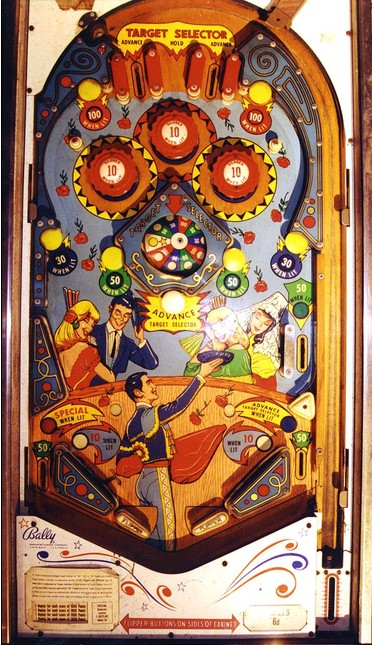

Use the left and right top lanes or the center white mushroom bumper to change which colour is selected on the wheel. Advance the wheel to red or white, then shoot the "orbits" up the edges of the table to hit the top mushroom bumpers when lit for 100 points as many times as possible.
The center Target Selector governs when most playfield features are lit. There are 10 positions on the Target Selector: three each of red, green, and blue, and one white star. Making the left or right top lanes or the center white mushroom bumper scores 30 points and advances the Target Selector one position clockwise. The center top lane, labelled Hold, does not have a switch at all associated to it and scores no points; this is the only way to not move the Target Selector at the start of a ball.
Pop bumpers and slingshots score 1 point or 10 when lit and are lit intermittently based on switch hits. Like many mid-1960s Bally games, this game uses a dynamic difficulty system that lights the bumpers and slings pseudorandomly, and does so less often if the machine has recently given out many free games.
Out lanes score 50 points. There is no kickback or center post. The right out lane gate is open only when Blue or White is selected at the Target Selector. There is no end of ball bonus or extra ball feature. Tilt ends game.
The below picture of Bullfight's playfield was taken from the Internet Pinball Database, where it was originally provided by Alan Tate.
